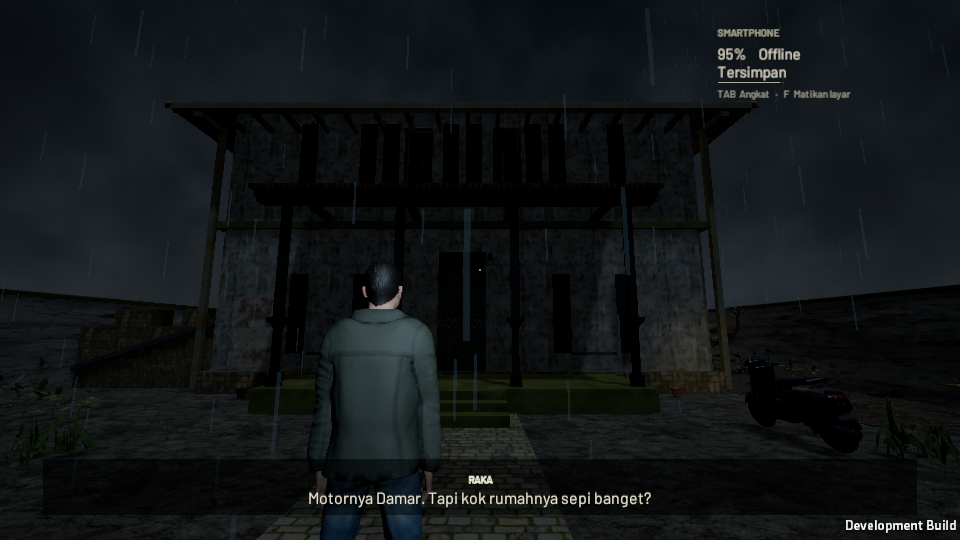
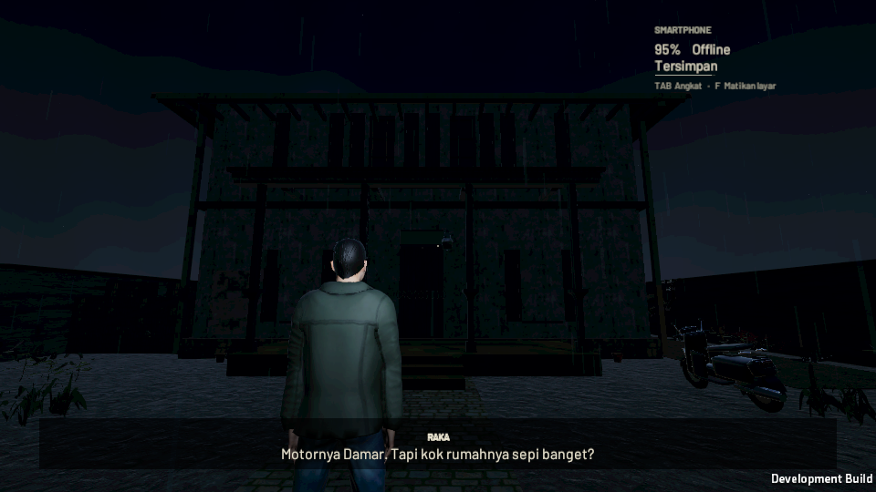
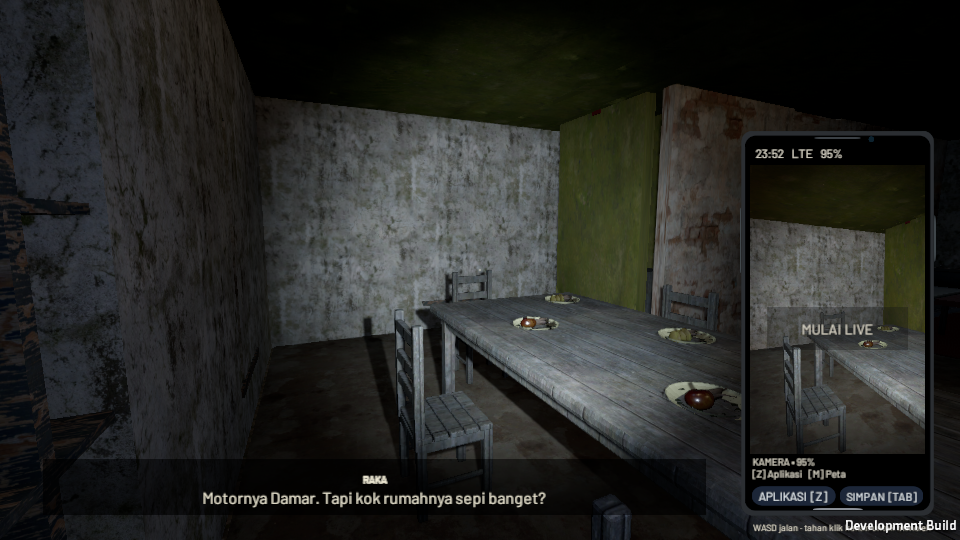
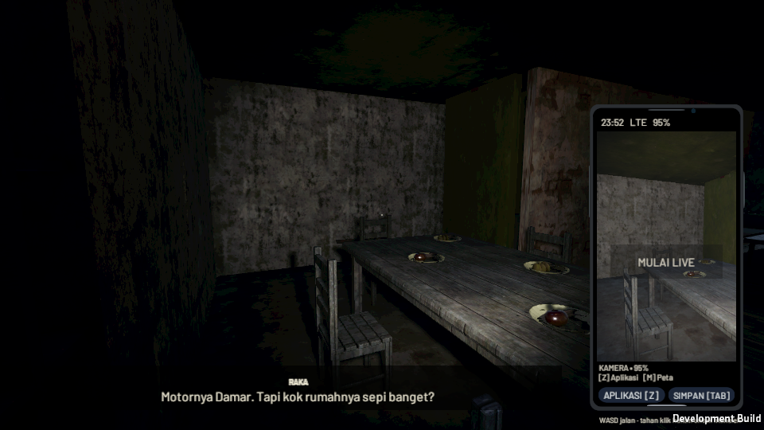
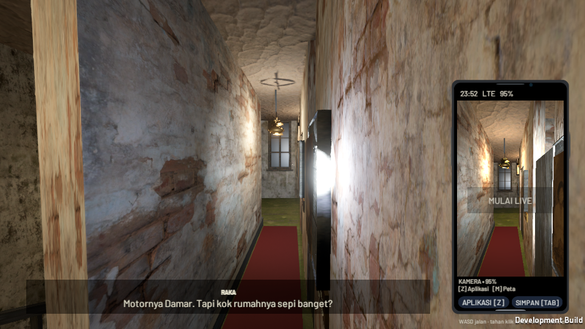
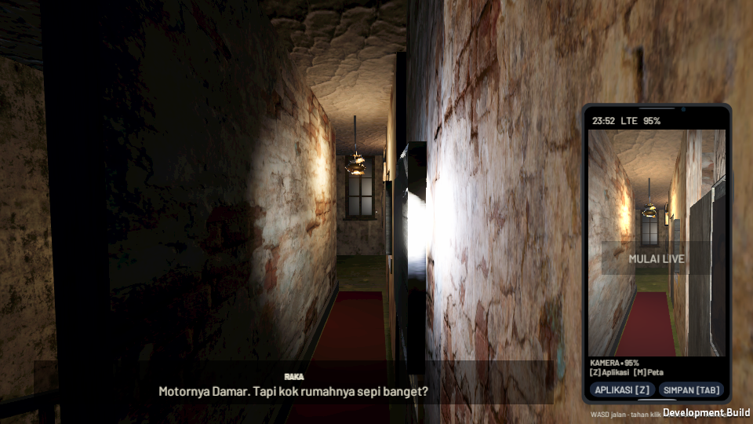

Perbandingan visual Layar Terakhir
Geser pembatas untuk membandingkan posisi kamera yang sama. Kiri: sebelum. Kanan: sesudah. Gambar langsung dari standalone Linux, 960×540; waktu cerita dibekukan. Ini bukan pengukuran FPS atau pengujian manual Windows.
Referensi resmi dan catatan penerapan
Halaman Atmaja
SebelumSesudah


Interior melalui HP
SebelumSesudah


Lantai dua Atmaja
SebelumSesudah

